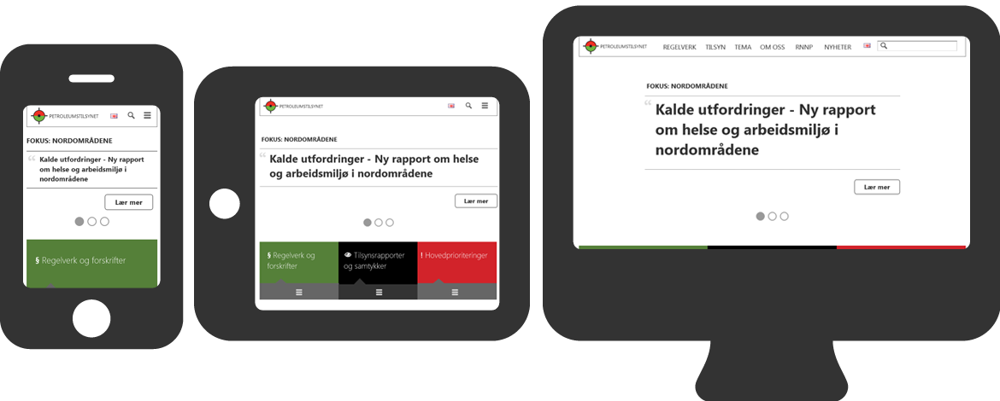

{{> header}}

<div class="article-wrapper">

    <h5 class="case">Case</h5>

    <h1>Norwegian Petroleum Safety Authority</h1>

    <h2>Information Management Visualization - creating views of unstructured documents</h2>

    <div class="article-image">
        <div class="article-image-element">
            
              <div class="article-image-overlay">
                <!--  <h2><span class="highlight">Wireframes for the new TV platform</span></h2>-->
              </div>
        </div>
    </div>


    <div class="article-text">

        <p>The scope of the project was to create a responsive website based on the original content.
          However, after carefully reviewing the information architecture and content, extensive content and structure improvements had to be made.


        </br></br>The final solution was well received both internally in PSA and externally by users. With a revamped design and fluid responsiveness
        to everything from mobile phones to large office screens, the solution gave the whole organisation a positive facelift. My roles included
        information architecture, interaction design, responsive wireframe prototyping, concept development, content strategy and a focus group workshop.

      </p>

    </div>

</div>


{{> footer}}
